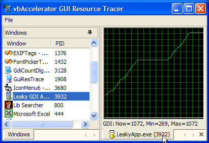
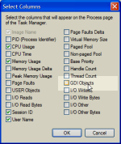
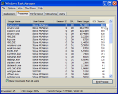
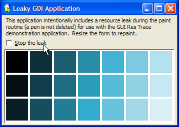

VB5 GuiResTracer (76K)
VB5 GuiResTracer (76K)
 VB6 GuiResTracer (72K)
VB6 GuiResTracer (72K)
 28 Mar 2003
28 Mar 2003
First Posted
 Subclassing Without The Crashes
Subclassing Without The Crashes
 vbAccelerator ListView Control
vbAccelerator ListView Control
 Using the System Image List with (and without) vbAccelerator Controls
Using the System Image List with (and without) vbAccelerator Controls
 vbAccelerator Visual Studio Style Tab Control
vbAccelerator Visual Studio Style Tab Control

GUI Resource Tracer
Check if your application is misusing GDI or User resources
Incorrect usage of GDI resources in an application can have a terrible effect on an application, particularly if you introduce a leak into a painting routine. This article presents a tracing tool you can use to test an application's GDI and User object allocation for Windows 2000 or XP systems.
GDI Resources
For a while I've been looking for a way of detecting leaks in GDI resources. There are commercial applications such as those from NuMega which can achieve that, but I've not always been in position to buy these. The traditional technique of running the application and watching how much memory is used/whether it kills the system isn't particularly great!
In Windows 2000, Microsoft introduced a new API call, GetGuiResources which provides assistance. The call can only be used at a Process level, but nevertheless this is a great step forward for testing. You can actually get Task Manager to show this on the Processes tab if you're interested in doing a quick test or trying to check something on a remote system:
Configuring Columns in Task Manager's resources tab
Task Manager Showing GDI Objects - VS.NET is winning again!
Unfortunately, you can't chart the result of this value in Task Manager or the Performance Monitor, so it can be a bit awkward to see exactly what's happening, which was the inspiration for this utility.
The Resource Trace Utility
The trace utility itself uses the Visual Studio Style Tab Control, ListView Control and System Image List from this site to provide a nice UI for selection and tracing of resources in use by any application. Simply select a window from the Windows tab docked to the left, and a new tab opens in the working area with a trace of resources. You can have as many independent traces as you want open at once, and also save the result of any trace to an XML file.
Trying It - The Leaky App
If you want to see how catastrophic a small GDI leak can be, try the LeakyApp sample included with the download. This has an intentional flaw in the painting routine which leaks a single GDI pen object each time the display is redrawn:
Start the Resource Tracer running, then start the leaky app sample as an executable (if you run it in the IDE, you can still trace the resources but you will need to trace the VB IDE instance that's running it, and any resources associated with the IDE will also be included). Then double click on LeakyApp in the Windows tab of the Resource tracer.
When LeakyApp starts running, you will see initially it consumes something around 40 GDI resources and 20 User resources. Now resize the form a bit and watch what happens - within a matter of moments the application can have over 1,000 GDI resources associated with it (more than even Visual Studio.NET, which consumes GDI at an alarming rate).
Now check the "Stop Leaking" box and continue resizing. This patches up the code to delete the last pen that's been created; as a consequence GDI usage will stay stable (give or take a few points). Of course you can't ever free up any of the resources you leaked earlier until the application ends (you have to take this as read because there's no way of checking overall GDI resource usage on NT systems without writing a device driver).
The consequence of a leak like this could be fatal to an application, particularly if the application was being used on a Windows 9x system. On Windows 9x, all GDI resources are allocated in a global 16-bit heap - not only does that mean you only have some 65,000 items to play with, but application using everything up means that there's nothing left for any other application on the system either (you've probably seem the consequence of this - no applications can paint themselves at all and all the fonts go funny...) On NT systems, things aren't so bad but ultimately you will either run out of memory or be unable to create any further GDI resources, which means your app will stop painting.
Getting TaskLists and Determining the EXE For a Window
One of the elements of this sample is some code for retrieving the list of Windows in the tasks list, and then determining which process id the task is associated with and therefore the executable that created the Window. This can come in handy for other applications so I'll describe how its done in more detail here.
Getting the TaskList
Getting a task list is done by first enumerating all of the top level windows and the system, and then filtering them according to some specific rules. These elements are described in the articles Enumerating Windows and Forcing a Window To Show in the Taskbar. A quick review of how you determine whether a window should appear in the task list or not is as follows:
- Check if the Window is visible:
If Not (IsWindowVisible(hWnd) = 0) Then ... - Get the Extended window style using GetWindowLong:
Dim lStyle As Long lStyle = GetWindowLong(hWnd, GWL_EXSTYLE) - Check if the WS_EX_TOOLWINDOW style is set. If it
is, the window does not appear in the list:
If (lStyle And WS_EX_TOOLWINDOW) = 0 Then ... - Check if the WS_EX_APPWINDOW style is set. If it is,
then the window should be included:
If (lStyle And WS_EX_APPWINDOW) = WS_EX_APPWINDOW Then bAdd = True Else ... - Otherwise, check if the window is not owned by any other
window. If it isn't then it should be included:
If (GetWindow(hWnd, GW_OWNER) = 0) Then bAdd = True End If
Once you have a list of windows, you can find the Process Id for each using the GetWindowThreadProcessId API call - the return value is the Thread Id, which you can ignore, and the ByRef second parameter returns the process id.
Determing the ExeName for a Process Id
Once you have a process id, you are then in a position to find out the executable name of the Window and to start tracing the GUI resources. Getting the executable name for a particular process id is achieved either using the easy way on 2000 and XP using the Process Status Helper DLL (PSAPI.DLL), or the slightly harder way, by enumerating processes using the Tool Help functions. Since this application can only run on Windows 2000 and above, the PSAPI.DLL function GetModuleFileNameEx is used:
Private Declare Function GetModuleFileNameExW Lib "psapi.dll" ( _
ByVal hProcess As Long, _
ByVal hModule As Long, _
ByVal lpFilename As Long, _
ByVal nSize As Long _
) As Long
Public Function ExeNameForPid(ByVal lPid As Long) As String
Dim hProcess As Long
hProcess = OpenProcess( _
PROCESS_QUERY_INFORMATION Or PROCESS_VM_READ, 0, lPid)
If Not (hProcess = 0) Then
m_sFileName = ExeNameForProcess(hProcess)
ExeNameForPid = m_sFileName
CloseHandle hProcess
End If
End Function
Private Function ExeNameForProcess(ByVal hProcess As Long) As String
ReDim b(0 To MAX_PATH) As Byte
Dim lPtrFileName As Long
lPtrFileName = VarPtr(b(0))
Dim lR As Long
lR = GetModuleFileNameExW(hProcess, 0, lPtrFileName, MAX_PATH)
If (lR > 1) Then
ReDim bR(0 To lR * 2 - 1) As Byte
CopyMemory bR(0), b(0), lR * 2
ExeNameForProcess = bR
End If
End Function